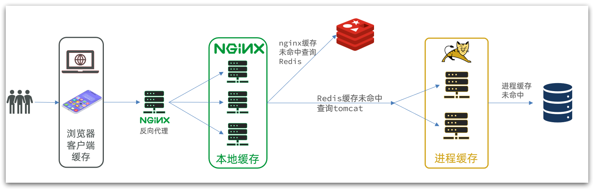
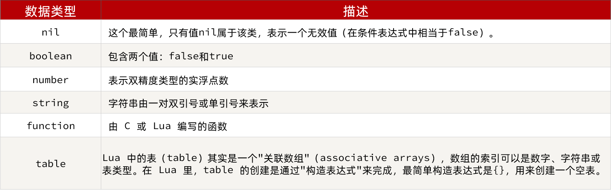
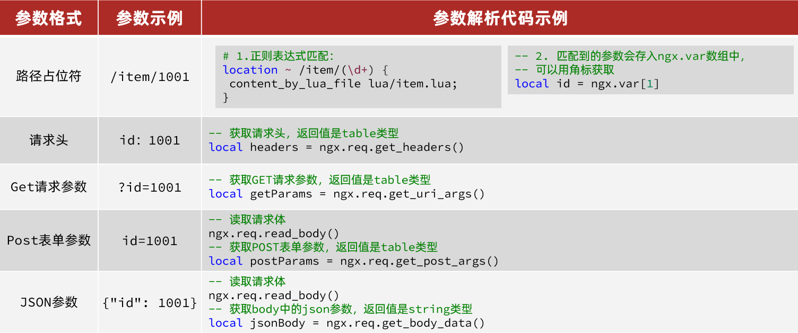
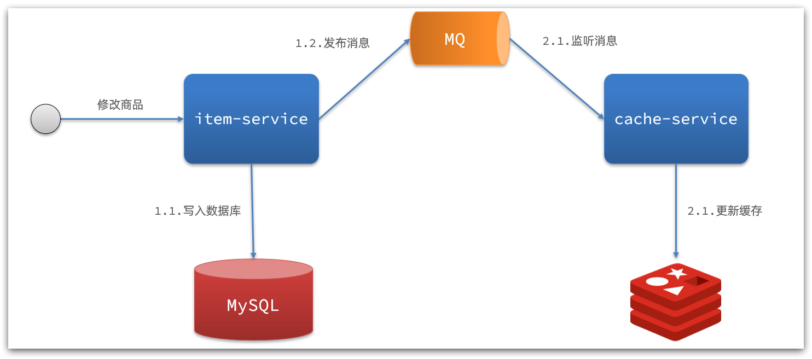
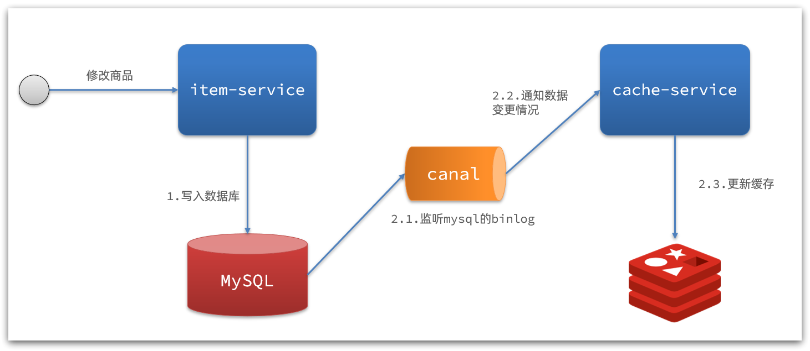

多级缓存
传统的缓存策略一般是请求到达Tomcat后，先查询Redis，如果未命中则查询数据库
存在下面的问题：
-
请求要经过Tomcat处理，Tomcat的性能成为整个系统的瓶颈
-
Redis缓存失效时，会对数据库产生冲击
多级缓存就是充分利用请求处理的每个环节，分别添加缓存，减轻Tomcat压力，提升服务性能：
- 浏览器访问静态资源时，优先读取浏览器本地缓存
- 访问非静态资源（ajax查询数据）时，访问服务端
- 请求到达Nginx后，优先读取Nginx本地缓存
- 如果Nginx本地缓存未命中，则去直接查询Redis（不经过Tomcat）
- 如果Redis查询未命中，则查询Tomcat
- 请求进入Tomcat后，优先查询JVM进程缓存
- 如果JVM进程缓存未命中，则查询数据库

在多级缓存架构中，Nginx内部需要编写本地缓存查询、Redis查询、Tomcat查询的业务逻辑，因此这样的nginx服务不再是一个反向代理服务器，而是一个编写业务的Web服务器了。

JVM进程缓存¶
Caffeine¶
- 分布式缓存，例如Redis：
- 优点：存储容量更大、可靠性更好、可以在集群间共享
- 缺点：访问缓存有网络开销
- 场景：缓存数据量较大、可靠性要求较高、需要在集群间共享
- 进程本地缓存，例如HashMap、GuavaCache：
- 优点：读取本地内存，没有网络开销，速度更快
- 缺点：存储容量有限、可靠性较低、无法共享
- 场景：性能要求较高，缓存数据量较小
Caffeine是一个基于Java8开发的，提供了近乎最佳命中率的高性能的本地缓存库。目前Spring内部的缓存使用的就是Caffeine。GitHub地址
<dependency>
<groupId>com.github.ben-manes.caffeine</groupId>
<artifactId>caffeine</artifactId>
</dependency>
基本使用
@Test
void testBasicOps() {
// 构建cache对象
Cache<String, String> cache = Caffeine.newBuilder().build();
// 存数据
cache.put("gf", "迪丽热巴");
// 取数据
String gf = cache.getIfPresent("gf");
System.out.println("gf = " + gf);
// 取数据，包含两个参数：
// 参数一：缓存的key
// 参数二：Lambda表达式，表达式参数就是缓存的key，方法体是查询数据库的逻辑
// 优先根据key查询JVM缓存，如果未命中，则执行参数二的Lambda表达式
String defaultGF = cache.get("defaultGF", key -> {
// 根据key去数据库查询数据
return "柳岩";
});
System.out.println("defaultGF = " + defaultGF);
}
Caffeine提供了三种缓存清除策略：
- 基于容量：设置缓存的数量上限
// 创建缓存对象
Cache<String, String> cache = Caffeine.newBuilder()
.maximumSize(1) // 设置缓存大小上限为 1
.build();
- 基于时间：设置缓存的有效时间
// 创建缓存对象
Cache<String, String> cache = Caffeine.newBuilder()
// 设置缓存有效期为 10 秒，从最后一次写入开始计时
.expireAfterWrite(Duration.ofSeconds(10))
.build();
- 基于引用：设置缓存为软引用或弱引用，利用GC来回收缓存数据。性能较差，不建议使用。
Note
在默认情况下，当一个缓存元素过期的时候，Caffeine不会自动立即将其清理和驱逐。而是在一次读或写操作后，或者在空闲时间完成对失效数据的驱逐。
案例¶
@Configuration
public class CaffeineConfig {
@Bean
public Cache<Long, Item> itemCache(){
return Caffeine.newBuilder()
.initialCapacity(100)
.maximumSize(10_000)
.build();
}
}
@RestController
@RequestMapping("item")
public class ItemController {
@Autowired
private IItemService itemService;
@Autowired
private Cache<Long, Item> itemCache;
@GetMapping("/{id}")
public Item findById(@PathVariable("id") Long id) {
// 先查询缓存，再判断是否查询数据库
return itemCache.get(id, key -> itemService.query()
.ne("status", 3)
.eq("id", key)
.one()
);
}
}
Lua入门¶
Nginx编程需要用到Lua语言，Lua 是一种轻量小巧的脚本语言，用标准C语言编写并以源代码形式开放，其设计目的是为了嵌入应用程序中，从而为应用程序提供灵活的扩展和定制功能。官网
Info
Lua经常嵌入到C语言开发的程序中，例如游戏开发、游戏插件等。 Nginx本身也是C语言开发，因此也允许基于Lua做拓展。
变量¶
Lua中支持的常见数据类型包括：

Tip
Lua提供了type()函数来判断一个变量的数据类型 print(type('hello world')) --------> string
Lua声明变量的时候无需指定数据类型，而是用local来声明变量为局部变量：
-- 声明字符串，可以用单引号或双引号，
local str = 'hello'
-- 字符串拼接可以使用 ..
local str2 = 'hello' .. 'world'
-- 声明数字
local num = 21
-- 声明布尔类型
local flag = true
Lua中的table类型既可以作为数组，又可以作为Java中的map来使用。数组就是特殊的table，key是数组角标而已：
-- 声明数组 ，key为角标的 table
local arr = {'java', 'python', 'lua'}
-- 声明table，类似java的map
local map = {name='Jack', age=21}
Lua中的数组角标是从1开始，访问的时候与Java中类似：
-- 访问数组，lua数组的角标从1开始
print(arr[1])
Lua中的table可以用key来访问：
-- 访问table
print(map['name'])
print(map.age)
循环¶
遍历数组：
-- 声明数组 key为索引的 table
local arr = {'java', 'python', 'lua'}
-- 遍历数组
for index,value in ipairs(arr)
do
print(index, value)
end
遍历普通table
-- 声明map，也就是table
local map = {name='Jack', age=21}
-- 遍历table
for key,value in pairs(map) do
print(key, value)
end
函数¶
定义函数的语法：
function 函数名(argument1, argument2..., argumentn)
-- 函数体
return 返回值
end
-- 示例
function printArr(arr)
for index, value in ipairs(arr) do
print(value)
end
end
条件控制¶
if(布尔表达式)
then
--[ 布尔表达式为 true 时执行该语句块 --]
else
--[ 布尔表达式为 false 时执行该语句块 --]
end
与java不同，布尔表达式中的逻辑运算是基于英文单词：

OpenResty¶
OpenResty® 是一个基于 Nginx的高性能 Web 平台，用于方便地搭建能够处理超高并发、扩展性极高的动态 Web 应用、Web 服务和动态网关。
其具备下列特点：
- 具备Nginx的完整功能
- 基于Lua语言进行扩展，集成了大量精良的 Lua 库、第三方模块
- 允许使用Lua自定义业务逻辑、自定义库
OpenResty监听请求¶
OpenResty的很多功能都依赖于其目录下的Lua库，需要在nginx.conf中指定依赖库的目录，并导入依赖：
-
添加对OpenResty的Lua模块的加载
修改
/usr/local/openresty/nginx/conf/nginx.conf文件，在其中的http下面，添加下面代码：##lua 模块 lua_package_path "/usr/local/openresty/lualib/?.lua;;"; ##c模块 lua_package_cpath "/usr/local/openresty/lualib/?.so;;"; -
监听/api/item路径
修改
/usr/local/openresty/nginx/conf/nginx.conf文件，在nginx.conf的server下面，添加对/api/item这个路径的监听：location /api/item { # 默认的响应类型 default_type application/json; # 响应结果由lua/item.lua文件来决定 content_by_lua_file lua/item.lua; } -
在
/usr/loca/openresty/nginx/lua文件夹下，新建文件：item.luangx.say('内容')
请求参数处理¶
openresty提供了API获取请求参数

查询Tomcat¶
nginx提供了内部API用以发送http请求：
local resp = ngx.location.capture("/path",{
method = ngx.HTTP_GET, -- 请求方式
args = {a=1,b=2}, -- get方式传参数（POST方式使用body）
})
返回的响应内容包括：
- resp.status：响应状态码
- resp.header：响应头，是一个table
- resp.body：响应体，就是响应数据
注意：这里的path是路径，并不包含IP和端口。这个请求会被nginx内部的server监听并处理。
但是我们希望这个请求发送到Tomcat服务器，所以还需要编写一个server来对这个路径做反向代理：
location /path {
# Tomcat地址
proxy_pass http://IP:PORT;
}
封装http工具¶
在/usr/local/openresty/lualib目录下，新建一个common.lua文件：
vi /usr/local/openresty/lualib/common.lua
内容如下:
-- 封装函数，发送http请求，并解析响应
local function read_http(path, params)
local resp = ngx.location.capture(path,{
method = ngx.HTTP_GET,
args = params,
})
if not resp then
-- 记录错误信息，返回404
ngx.log(ngx.ERR, "http请求查询失败, path: ", path , ", args: ", args)
ngx.exit(404)
end
return resp.body
end
-- 将方法导出
local _M = {
read_http = read_http
}
return _M
Tip
这个工具将read_http函数封装到_M这个table类型的变量中，并且返回，这类似于导出。
使用的时候，可以利用require('common')来导入该函数库，这里的common是函数库的文件名。
CJSON工具类¶
OpenResty提供了一个cjson的模块用来处理JSON的序列化和反序列化。
-
引入cjson模块：
local cjson = require "cjson" -
序列化
local obj = { name = 'jack', age = 21 } -- 把 table 序列化为 json local json = cjson.encode(obj) -
反序列化
local json = '{"name": "jack", "age": 21}' -- 反序列化 json为 table local obj = cjson.decode(json); print(obj.name)
基于ID负载均衡¶
实际开发中，OpenResty需要对tomcat集群做负载均衡。
而默认的负载均衡规则是轮询模式，例如，当我们查询/item/10001时：
- 第一次会访问8081端口的tomcat服务，在该服务内部就形成了JVM进程缓存
- 第二次会访问8082端口的tomcat服务，该服务内部没有JVM缓存（因为JVM缓存无法共享），会查询数据库
- ...
这样就无法利用JVM进程缓存，影响性能。
nginx提供了基于请求路径做负载均衡的算法：
nginx根据请求路径做hash运算，把得到的数值对tomcat服务的数量取余，余数是几，就访问第几个服务，实现负载均衡。
Example
- 我们的请求路径是 /item/10001
- tomcat总数为2台（8081、8082）
- 对请求路径/item/1001做hash运算求余的结果为1
- 则访问第一个tomcat服务，也就是8081
只要id不变，每次hash运算结果也不会变，那就可以保证同一个商品，一直访问同一个tomcat服务，确保JVM缓存生效。
实现
修改/usr/local/openresty/nginx/conf/nginx.conf文件，实现基于ID做负载均衡。
首先，定义tomcat集群，并设置基于路径做负载均衡：
upstream tomcat-cluster {
hash $request_uri;
server 192.168.150.1:8081;
server 192.168.150.1:8082;
}
然后，修改对tomcat服务的反向代理，目标指向tomcat集群：
location /item {
proxy_pass http://tomcat-cluster;
}
重新加载OpenResty
nginx -s reload
Redis缓存¶
Redis缓存预热
Redis缓存会面临冷启动问题：
冷启动：服务刚刚启动时，Redis中并没有缓存，如果所有商品数据都在第一次查询时添加缓存，可能会给数据库带来较大压力。
缓存预热：在实际开发中，我们可以利用大数据统计用户访问的热点数据，在项目启动时将这些热点数据提前查询并保存到Redis中。
Tip
可以利用InitializingBean接口来实现，因为InitializingBean中的方法afterPropertiesSet可以在对象被Spring创建并且成员变量全部注入后执行。
查询Redis缓存
当请求进入OpenResty之后：
- 优先查询Redis缓存
- 如果Redis缓存未命中，再查询Tomcat
OpenResty提供了操作Redis的模块，我们只要引入该模块就能直接使用。但是为了方便，我们将Redis操作封装到之前的common.lua工具库中。
修改/usr/local/openresty/lualib/common.lua文件：
-
引入Redis模块，并初始化Redis对象
-- 导入redis local redis = require('resty.redis') -- 初始化redis local red = redis:new() red:set_timeouts(1000, 1000, 1000) -
封装函数，用来释放Redis连接，其实是放入连接池
-- 关闭redis连接的工具方法，其实是放入连接池 local function close_redis(red) local pool_max_idle_time = 10000 -- 连接的空闲时间，单位是毫秒 local pool_size = 100 --连接池大小 local ok, err = red:set_keepalive(pool_max_idle_time, pool_size) if not ok then ngx.log(ngx.ERR, "放入redis连接池失败: ", err) end end -
封装函数，根据key查询Redis数据
-- 查询redis的方法 ip和port是redis地址，key是查询的key local function read_redis(ip, port, key) -- 获取一个连接 local ok, err = red:connect(ip, port) if not ok then ngx.log(ngx.ERR, "连接redis失败 : ", err) return nil end -- 查询redis local resp, err = red:get(key) -- 查询失败处理 if not resp then ngx.log(ngx.ERR, "查询Redis失败: ", err, ", key = " , key) end --得到的数据为空处理 if resp == ngx.null then resp = nil ngx.log(ngx.ERR, "查询Redis数据为空, key = ", key) end close_redis(red) return resp end -
导出
-- 将方法导出 local _M = { read_http = read_http, read_redis = read_redis } return _M
Nginx本地缓存¶
OpenResty为Nginx提供了shared dict的功能，可以在nginx的多个worker之间共享数据，实现缓存功能。
-
开启共享字典，在nginx.conf的http下添加配置：
# 共享字典，也就是本地缓存，名称叫做：item_cache，大小150m lua_shared_dict item_cache 150m; -
操作共享字典：
-- 获取本地缓存对象 local item_cache = ngx.shared.item_cache -- 存储, 指定key、value、过期时间，单位s，默认为0代表永不过期 item_cache:set('key', 'value', 1000) -- 读取 local val = item_cache:get('key')示例
-- 导入共享词典，本地缓存 local item_cache = ngx.shared.item_cache -- 封装查询函数 function read_data(key, expire, path, params) -- 查询本地缓存 local val = item_cache:get(key) if not val then ngx.log(ngx.ERR, "本地缓存查询失败，尝试查询Redis， key: ", key) -- 查询redis val = read_redis("127.0.0.1", 6379, key) -- 判断查询结果 if not val then ngx.log(ngx.ERR, "redis查询失败，尝试查询http， key: ", key) -- redis查询失败，去查询http val = read_http(path, params) end end -- 查询成功，把数据写入本地缓存 item_cache:set(key, val, expire) -- 返回数据 return val end
缓存同步¶
大多数情况下，浏览器查询到的都是缓存数据，如果缓存数据与数据库数据存在较大差异，可能会产生比较严重的后果。 所以我们必须保证数据库数据、缓存数据的一致性，这就是缓存与数据库的同步。
缓存同步策略¶
-
设置有效期：给缓存设置有效期，到期后自动删除。再次查询时更新
-
优势：简单、方便
-
缺点：时效性差，缓存过期之前可能不一致
-
场景：更新频率较低，时效性要求低的业务
-
-
同步双写：在修改数据库的同时，直接修改缓存
-
优势：时效性强，缓存与数据库强一致
-
缺点：有代码侵入，耦合度高
-
场景：对一致性、时效性要求较高的缓存数据
-
-
异步通知：修改数据库时发送事件通知，相关服务监听到通知后修改缓存数据
-
优势：低耦合，可以同时通知多个缓存服务
-
缺点：时效性一般，可能存在中间不一致状态
-
场景：时效性要求一般，有多个服务需要同步
-
异步通知有两种实现方式，基于MQ（有少量的代码侵入）或者Canal（代码零侵入）


Canal¶
Canal [kə'næl]，译意为水道/管道/沟渠，canal是阿里巴巴旗下的一款开源项目，基于Java开发。基于数据库增量日志解析，提供增量数据订阅&消费。GitHub的地址
Canal是基于mysql的主从同步来实现的（Canal就是把自己伪装成MySQL的一个slave节点，从而监听master的binary log变化），再把得到的变化信息通知给Canal的客户端，进而完成对其它数据库的同步。
配置安装过程详见Canal安装
监听Canal¶
我们可以利用Canal提供的Java客户端，监听Canal通知消息。当收到变化的消息时，完成对缓存的更新。
可以使用GitHub上的第三方开源的canal-starter客户端。地址：https://github.com/NormanGyllenhaal/canal-client
与SpringBoot完美整合，自动装配。
-
引入依赖
<dependency> <groupId>top.javatool</groupId> <artifactId>canal-spring-boot-starter</artifactId> <version>1.2.1-RELEASE</version> </dependency> -
配置文件
canal: destination: heima # canal的集群名字，要与安装canal时设置的名称一致 server: 192.168.150.101:11111 # canal服务地址 -
修改实体类
通过
@Id、@Column等注解完成实体类与数据库表字段的映射@Data @TableName("tb_item") public class Item { @TableId(type = IdType.AUTO) @Id private Long id;//商品id @Column(name = "name") private String name;//商品名称 private String title;//商品标题 private Long price;//价格（分） private String image;//商品图片 private String category;//分类名称 private String brand;//品牌名称 private String spec;//规格 private Integer status;//商品状态 1-正常，2-下架 private Date createTime;//创建时间 private Date updateTime;//更新时间 @TableField(exist = false) @Transient // 不属于数据库表的数据 private Integer stock; @TableField(exist = false) @Transient private Integer sold; } -
编写监听器
通过实现
EntryHandler<T>接口编写监听器，监听Canal消息。注意两点：- 实现类通过
@CanalTable("tb_item")指定监听的表信息 EntryHandler的泛型是与表对应的实体类
@CanalTable("tb_item") // 监听的数据库表名 @Component public class ItemHandler implements EntryHandler<Item> { @Autowired private RedisHandler redisHandler; // 封装的Redis操作类，可使用StringRedisTemplate类代替 @Autowired private Cache<Long, Item> itemCache; @Override public void insert(Item item) { // 写数据到JVM进程缓存 itemCache.put(item.getId(), item); // 写数据到redis redisHandler.saveItem(item); } @Override public void update(Item before, Item after) { // 写数据到JVM进程缓存 itemCache.put(after.getId(), after); // 写数据到redis redisHandler.saveItem(after); } @Override public void delete(Item item) { // 删除数据到JVM进程缓存 itemCache.invalidate(item.getId()); // 删除数据到redis redisHandler.deleteItemById(item.getId()); } } - 实现类通过